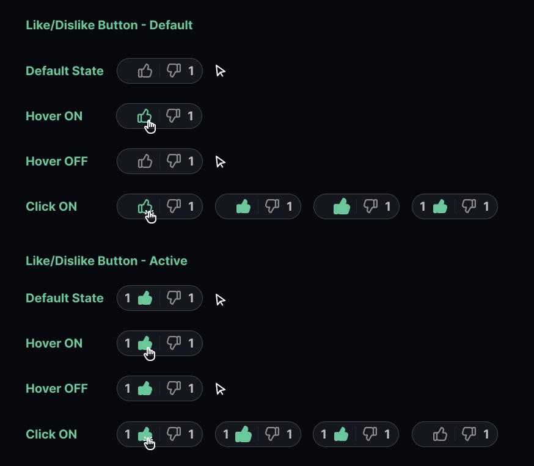

Microinteractions are essential in UX design, providing feedback, enhancing user experience, and improving usability. In this project, I refined an existing set of microinteractions using HTML, CSS, and JavaScript. Specifically, I reimagined and redesigned the Personality Database Character Profile Page, enhancing the functionality and user experience.
Personality Database (PDB) is a community-driven platform where users explore and discuss personality types through frameworks such as MBTI, Enneagram, and Socionics. It enables users to assign and debate personality types for real-life figures and fictional characters, fostering engaging discussions and deeper insights into personality systems. Despite its wealth of information and active community, there are areas where the user experience could be improved.
Over the course of 10 weeks, I undertook the challenge of independently reimagining and developing improved microinteractions. Using HTML, CSS, and JavaScript, I built a functional prototype that seamlessly integrated with PDB's branding. Each interaction was thoughtfully designed to enhance usability and provide visually engaging feedback. Through an iterative process that included 3 design and testing phases: Alpha, Beta, and Final, I delivered a refined final product, complete with detailed documentation outlining the interaction mechanics.
The goal was to enhance existing microinteractions while thoroughly documenting their triggers, rules, feedback, loops, and modes. These interactions were to be integrated into a responsive page with a clear and user-friendly layout. I chose to focus on PDB’s character profile page, as it offered several areas for improvement. The original page had significant issues with both functionality and aesthetics, which I aimed to resolve. The five interactions I focused on improving were:
My primary goal was to address the abrupt and jarring animations and transition states for each interaction, ensuring a smoother and more seamless experience. I also aimed to provide clear feedback for the user when hovering or clicking on elements through the use of color, cursor changes, and sizing. Additionally, I focused on creating a design that aligned with PDB’s branding, ensuring the color scheme and fonts were consistent with the site’s aesthetic.
In the Alpha stage, I focused on improving the ‘Select Personalities’ dropdown button. I enhanced the hover state by making it more dynamic to grab the user’s attention. The original interaction only involved a color change to the button’s border, so I added a size increase during the hover state to make the interaction more noticeable. Additionally, for the transition to the active state, I implemented a smooth downward motion, addressing the jarring effect of the original instant change.
In the Beta stage, I focused on refining the ‘Like’ and ‘Dislike’ buttons for the comments. The original buttons on PDB lacked hover states, so I introduced a color change, where the thumb SVGs transition to a green color when the user hovers over the button. For the active state, I reduced the abruptness of the original transition by having the thumb outlines smoothly fade into a solid green filled-in thumb.
In the final stage, I focused on refining the ‘New’ and ‘More’ buttons for the comments filter, which includes two other buttons. For both buttons, I implemented a hover state where a low-opacity green appears when the user hovers over them. In the active state, the button fills with 100% opacity green. Additionally, the text includes a state indicator, fading from gray to white in both the hover and active states. For the ‘More’ button, I added extra functionality: when clicked, it triggers a CSS/JavaScript dropdown animation, addressing the abrupt transition that was present in the original design.
Through the process of ideation, iteration, and debugging, I successfully achieved my main goals: eliminating the jarring effects of instantaneous changes and providing clear visual feedback for default, hover, and active states. By incorporating color, sizing, cursors, and animations, I created a smoother, more visually appealing experience. These improvements not only enhanced the overall design but also helped guide users' attention, making the interactions more intuitive and engaging.
The project challenged me in several ways and provided an opportunity to refine my skills in HTML, CSS, and JavaScript. Before this, I hadn’t fully appreciated the functional importance of microinteractions. By scripting the descriptions of how each microinteraction works, I gained a deeper understanding of the nuance and coding required for something that seems small. I realized how these subtle interactions can transform a negative user experience into a positive one. For this project, I focused on improving the distinction between default, hover, and active states, while enhancing the animations to guide users through the interface in a more meaningful way.